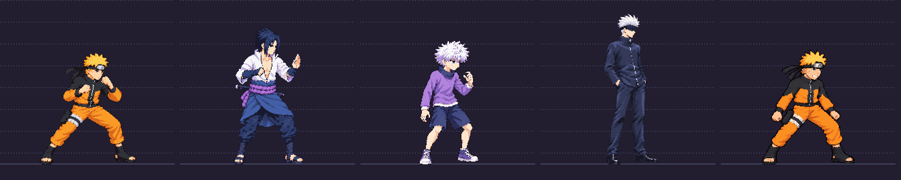

Approved anatomy references


2026-10-12: user-approved artwork — charge v07, jumpUp v06, specialDown v05. Other candidates on this page remain held and unapproved. Technical and contact QA is separate. Approval record.
Unapproved candidates. Recommend review of charge v07, jumpUp v06, specialDown v05. The other four remain HOLD, with reasons below. Original production art remains in the game until Claude integrates.
Players show actual48-color packed cells at native256px. Held strips use an isolated warning-mode diagnostic atlas only; their strict tests failed or motion remains wrong. No manual QA passes or exemptions were invented. Full QA notes
This lineup includes existing packed fighter sheets and corrected charge f0. Historical build bands and older packed cast pixels are not a new approval baseline; the exact title cells above govern Naruto.
